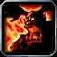
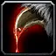
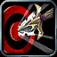
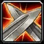
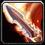

Rogue – Combat leveling
Rogue – Combat leveling
Leveling Split 20 / 31 / 0 (Assassination / Combat / Subtlety)
Sinister Strike, Riposte and Blade Flurry by 30 and Adrenaline Rush at 40, with any weapon type, then Malice, Lethality and Cold Blood.
Talents in this build
Hover or tap a talent to see what it does at that rank.
Assassination · 20

Malice 5/5
Ruthlessness 3/3- Improved Slice and Dice 2/3
 Vigor 2/2
Vigor 2/2 Blood Splatter 1/1
Blood Splatter 1/1 Lethality 2/2
Lethality 2/2- Vile Poisons 4/5
- Cold Blood 1/1
Combat · 31
 Coup de Grace 3/3
Coup de Grace 3/3 Efficient Strikes 2/2
Efficient Strikes 2/2- Deflection 3/3

Precision 3/3- Endurance 1/2

Riposte 1/1 Composure 2/2
Composure 2/2 Flawless Execution 1/1
Flawless Execution 1/1 Aggression 2/3
Aggression 2/3 Weapon Expertise 2/2
Weapon Expertise 2/2
Blade Flurry 1/1 Dual Wield Specialization 2/2
Dual Wield Specialization 2/2 Hack and Slash 2/5
Hack and Slash 2/5 Flash of Steel 5/5
Flash of Steel 5/5- Adrenaline Rush 1/1
Leveling order
level 10 → 60
One talent point per level from 10 to 60. Press play to watch the build fill in, or switch to Text for the list.
| Level | Talent | Tree |
|---|---|---|
| 10 | Combat | |
| 11 | Combat | |
| 12 | Combat | |
| 13 | Combat | |
| 14 | Combat | |
| 15 | Precision 1/3 | Combat |
| 16 | Precision 2/3 | Combat |
| 17 | Precision 3/3 | Combat |
| 18 | Deflection 1/3 | Combat |
| 19 | Deflection 2/3 | Combat |
| 20 | Deflection 3/3 | Combat |
| 21 | Riposte 1/1 | Combat |
| 22 | Combat | |
| 23 | Combat | |
| 24 | Endurance 1/2 | Combat |
| 25 | Combat | |
| 26 | Combat | |
| 27 | Combat | |
| 28 | Combat | |
| 29 | Combat | |
| 30 | Blade Flurry 1/1 | Combat |
| 31 | Combat | |
| 32 | Combat | |
| 33 | Combat | |
| 34 | Combat | |
| 35 | Combat | |
| 36 | Combat | |
| 37 | Combat | |
| 38 | Combat | |
| 39 | Combat | |
| 40 | Adrenaline Rush 1/1 | Combat |
| 41 | Malice 1/5 | Assassination |
| 42 | Malice 2/5 | Assassination |
| 43 | Malice 3/5 | Assassination |
| 44 | Malice 4/5 | Assassination |
| 45 | Malice 5/5 | Assassination |
| 46 | Ruthlessness 1/3 | Assassination |
| 47 | Ruthlessness 2/3 | Assassination |
| 48 | Ruthlessness 3/3 | Assassination |
| 49 | Improved Slice and Dice 1/3 | Assassination |
| 50 | Improved Slice and Dice 2/3 | Assassination |
| 51 | Assassination | |
| 52 | Assassination | |
| 53 | Assassination | |
| 54 | Assassination | |
| 55 | Assassination | |
| 56 | Cold Blood 1/1 | Assassination |
| 57 | Vile Poisons 1/5 | Assassination |
| 58 | Vile Poisons 2/5 | Assassination |
| 59 | Vile Poisons 3/5 | Assassination |
| 60 | Vile Poisons 4/5 | Assassination |